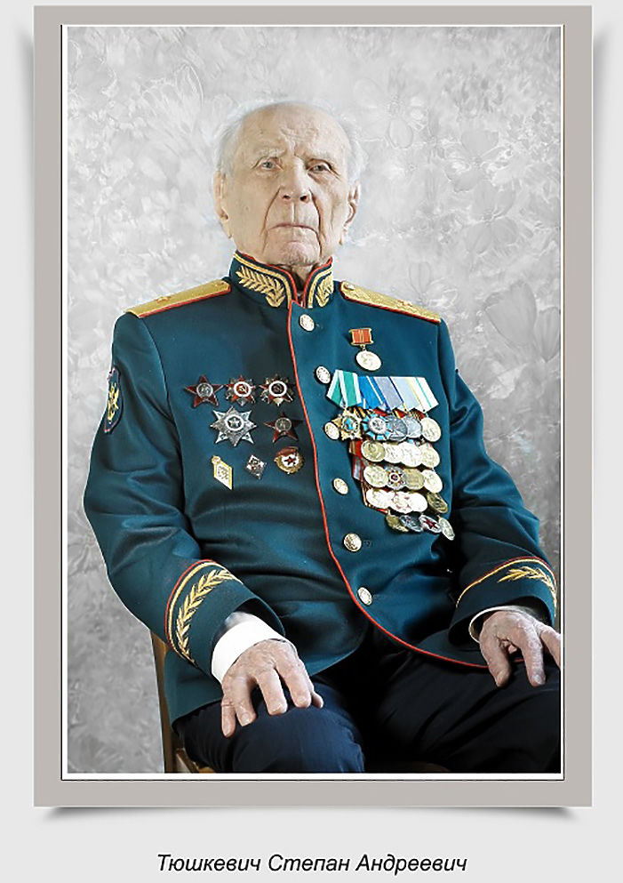
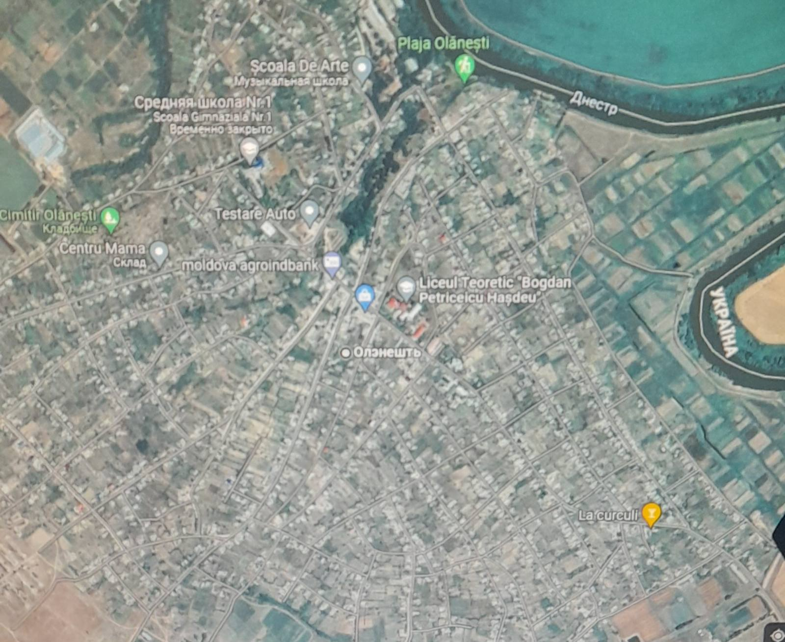
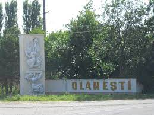
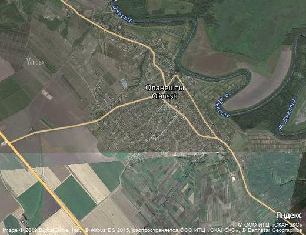
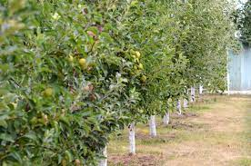
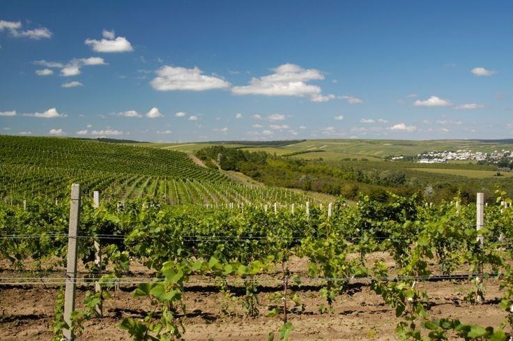
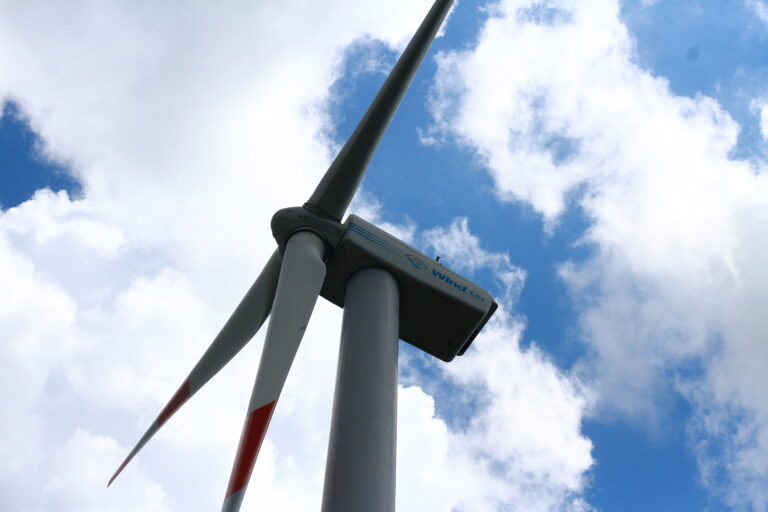

- Numărul populaţiei pe categoriile de vîrstă:
- Total locuitori al satului – 0000.
- 0 – 3 ani – 000 persoane
- 3 – 7 ani – 000 persoane
- 7 – 16 ani – 000 persoane
- 15-56/61 ani – 0000 persoane
- 57/62 + ani – 000 persoane
- Persoane de vîrstă pensionară – 000.
- Persoane în etate peste 75 ani – 000
- Persoane singuratici – 00 persoane
- Veteranii MRPAP – 0 persoane, văduve a veteranilor de război – 0 persoane
- Participanţi la luptele din Afganistan – 0persoane
- Participanţi la lichidarea avariei de la Cernobîl – 0 persoane
- Participanţi la conflictul armat din vara anului 1992 – 00 persoane

- Denumirea oficială a unitaţii administativ-teritoriale – este s. Olăneşti, suprafaţa
teritoriului administrat – 5339 ha, suprafaţa satului ocupă 376 ha, delimitarea teritorială
la nord este cu s. Purcari, la sud este cu s. Corcmaz, la est cu s. Troiţa Republica
Ucraina, şi la vest cu satele Antoneşti şi Caplani. Localitatea de reşedinţă este
s.Olăneşti.
- Localitatea s.Olăneşti este întemeiată şi se datează istoric din anii 1595. În prezent
fondul funciar al localităţii constituie:
- – terenuri cu destinaţie agricolă – 4136 ha,
- – terenurile satului, destinate construcţiilor caselor de locuit, clădirilor de menire
socială – 543 ha,
- – terenurile destinate transporturilor, telecomunicaţiilor şi altor destinaţii speciale – 93
ha,
- – terenurile Fondului Silvic – 319 ha,
- – terenurile Fondului Apelor – 508 ha,
- – terenurile destinate protecţiei naturii – 1,30 ha,
- Numărul de locuitori la 01.01.0000 constituie – 0000 cetăţeni,moldoveni -00 %, alte
naţionalităţi – 00 %.
- Consiliul local este compus din 00 consilieri şi primarul – d-l XXXXXX XXXXX, funcţionari ai
primăriei – 0, lucrători auxiliari – 00;
- Patrimoniul unităţii administrativ-teritoriale, componenţa şi indicii calitativi şi
cantitativi,ai acestuia;


- Căile de comunicaţie existente: traseul naţional cu distanţa de 4 km, aeroportul la distanţa
de 120 km, care se află lîngă or. Chişinău,gara feroviară centrală din Chişinău la distanţa
de 120 km.;

- Agenţii economici care îşi desfăşoară activitatea în s. Olăneşti – în total 00 de agenţi
economici, Gospodării Ţărăneşti – 000; Moară – 0, oloiniţe – 0, Gospodărie comunală – 0,


- Pe teritoriul satului funcţionează Biserica creştin-ortodoxă „ Cuvioasa Parascheva” datată
din anul 1832, cu hramul la 27 octombrie de sărbătoarea „Cuvioasa Parascheva” şi Paraclisul
„Sfinţii Petru şi Pavel” cu hramul la 12 iulie.
- În Moldova, însă, abia în anul 2021 reușim să asigurăm 1% din energia consumată în țară. „Suntem
cu 20 de ani în urmă la dezvoltarea energiei verzi”, ne spune Corneliu Mîrza, ex-viceministru al
Mediului și expert în domeniul eficienței energetice.
Olanesti are 2 mori eoliene ce e foarte binevenit pentru tara

|


{kind=link}
{kind=link}
{kind=link}
{kind=link}
{kind=link}
{kind=link}
{kind=link}
{kind=link}
{kind=link}
{kind=link}